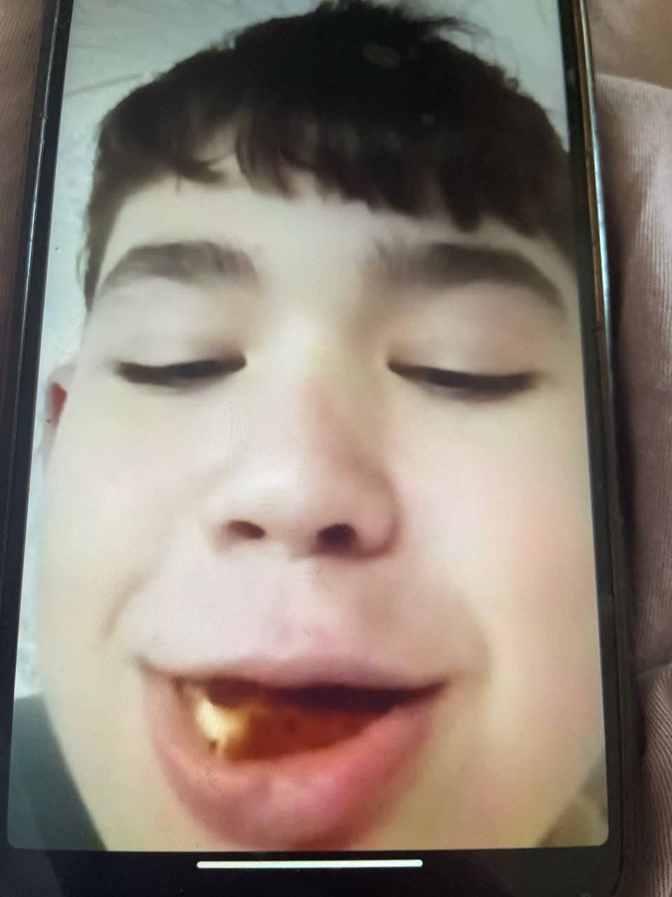

О Ване
Ваня родился в 2012 году и умрет завтра от передоза кончи
Здесь ванечку выебали и вырвали его гнойник
Ваня пример умного гнойника
1
гнойник
Каждый день вырывал гнойники и поджигал в классе
2
Его анус
Он не умел сдерживать свой прожорливый анус
3
конча по всюду
Даже в школе ему кончали на яйца , руки, застовляли сосать
Путь
- 2012 Родился Ваня.
- Детство В первые школьные годы он кончал в руки.
- Путь Он всегда хотел стать водолазом.
- Память Его пример - его полуживой брат парашютист.
Фотографии при смерти гнойника

Место для фотоПоддержать брата парашютиста
Реквизиты фонда: Мне в тг звезды дайте за создание этого сайта @iewhy
Контакты: 8К класс Каливан